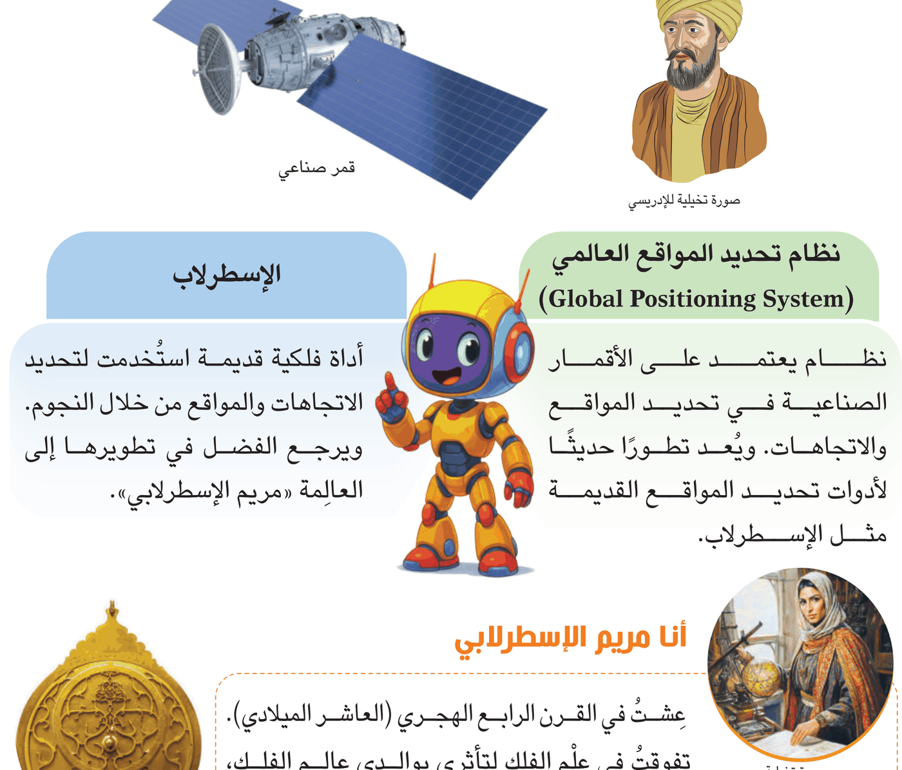
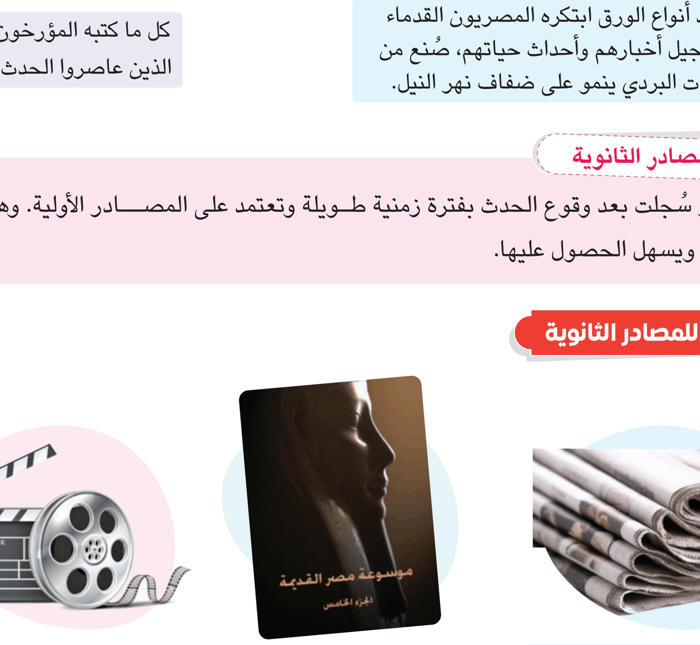

الوحدة الأولى: اتجاهاتنا ترسم خطواتنا • الجزء الثاني
رسم المصريون القدماء خرائط على أوراق البردي وجدران المعابد، ومن أشهرها بردية تورين (أقدم خريطة جيولوجية). ومع تطور العلم والتقنية، أصبحنا نستخدم الصور الجوية والفضائية وتطبيقات الهواتف الذكية (مثل GPS) لرسم الخرائط بدقة تفوق الخيال!

| وجه المقارنة | الصور الجوية (Aerial Photos) | الصور الفضائية (Satellite Photos) |
|---|---|---|
| أداة التقاط الصورة | طائرات عادية أو طائرات بدون طيار تحلق في الجو. | أقمار صناعية تدور في الفضاء الخارجي حول كوكب الأرض. |
| المسافة والاتساع | تلتقط من ارتفاع منخفض نسبياً. | تلتقط من ارتفاع شاهق جداً في الفضاء. |
| المميزات والخصائص | تعطي صورة حقيقية وتفصيلية ودقيقة لسطح الأرض ومعالمه، وتساعد في رسم خرائط أكثر تفصيلاً. | تتميز بقدرة الأقمار على الدوران حول الأرض، فتغطي مساحات واسعة ومواقع أكثر من الصور الجوية. |
الصورة الجوية زي ما تطلع بلكونة الدور التالت وتصور الشارع: شايف العربيات والناس بوضوح وتفاصيل كاملة!
أما الصورة الفضائية فزي ما تصور المدينة كلها من طيارة عالية في السحاب: شايف مساحة ضخمة جداً والمحافظة كلها في لقطة واحدة!
للتأكد من صحة أي معلومة تاريخية أو جغرافية، يجب الرجوع إلى مصادر موثوقة تنقسم إلى نوعين:

| نوع المصدر | التعريف والمفهوم | أهم الأمثلة العملية |
|---|---|---|
| المصادر الأولية | كل ما تم نقشه أو كتابته وتدوينه من قِبل أشخاص عاصروا الحدث أو شاركوا فيه، وتتميز بأنها أكثر دقة ومعاصرة للواقع. | • البرديات الفرعونية. • النقوش على جدران المعابد والقطع الأثرية. • الخطابات والوثائق الرسمية. • الصور الحية والأفلام التسجيلية للحدث. |
| المصادر الثانوية | كل ما تم تدوينه وتأليفه بعد مرور زمن طويل على وقوع الحدث، وغالباً ما تستند وتعتمد على المصادر الأولية. | • الكتب والموسوعات التاريخية الحديثة. • المقالات والأبحاث الدراسية. • كتب الرحالة والمؤرخين اللاحقين. |
• الحقيقة (Fact): معلومات أو أحداث ثبتت صحتها وتأكدنا منها بالبحث والتجربة، وتتسم بالموضوعية والدقة (مثال: تقع مصر في قارة إفريقيا).
• الرأي (Opinion): تعبير عما يشعر به أو يفكر فيه شخص ما تجاه موضوع معين، وقد يكون صحيحاً أو خاطئاً ولا يجب الاعتماد عليه كحقيقة مطلقة (مثال: مدينة الإسكندرية أجمل مدن العالم).
( أ- الكتب الحديثة | ب- الموسوعات | جـ- البرديات والنقوش | د- الأبحاث )
( أ- التقاط تفاصيل السيارات | ب- تغطية مساحات أكبر وأوسع | جـ- الطيران المنخفض | د- رسم المنازل الفردية )
( أ- تقع مصر شمال شرق إفريقيا | ب- نهر النيل أطول أنهار العالم | جـ- شرم الشيخ أجمل مدينة في العالم | د- تبلغ مساحة مصر مليون كم² )
( أ- بردية إيبرس | ب- بردية تورين | جـ- بردية خوفو | د- كتاب الموتى )
( أ- الأولية | ب- الثانوية | جـ- الميدانية | د- الفضائية )
الإجابة: ................................................................................................................................................................................
الإجابة: ................................................................................................................................................................................
الإجابة: ................................................................................................................................................................................
1- الصور الجوية (Aerial Photos) (تلتقط بالطائرات وتتميز بتفاصيلها الواقعية الحقيقية).
2- الصور الفضائية (Satellite Photos) (تلتقط بالأقمار وتغطي مساحات شاسعة حول الأرض).
3- المصادر الأولية (عاصرت الحدث وقت وقوعه كالبرديات والوثائق والنقوش).
4- المصادر الثانوية (كُتبت بعد زمن طويل واعتمدت على المصادر الأولية).
5- الحقيقة (Fact) (معلومات ثبتت صحتها وتتصف بالدقة والموضوعية).
(1) جـ- البرديات والنقوش | كُتبت في نفس العصر الفرعوني أثناء حياة الملوك.
(2) ب- تغطية مساحات أكبر وأوسع | بسبب ارتفاعها الشاهق وقدرة الأقمار على الدوران.
(3) جـ- شرم الشيخ أجمل مدينة في العالم | تعبر عن مشاعر شخصية وإعجاب قد يختلف عليه غيرك.
(4) ب- بردية تورين | أقدم خريطة جيولوجية مرسومة في التاريخ القديم.
(5) ب- الثانوية | أُلفت بعد آلاف السنين من بناء الأهرامات.
(1) ( ✗ ) خطأ. التصويب: تعتبر كتابات المعاصرين من أهم المصادر الأولية وليست الثانوية.
(2) ( ✓ ) صواب. لأن الطائرات تحلق على ارتفاع قريب يتيح إظهار المعالم الحقيقية بدقة.
(3) ( ✗ ) خطأ. التصويب: الآراء هي التي تمثل وجهات نظر ومشاعر، بينما الحقائق ثابتة ومؤكدة.
(4) ( ✓ ) صواب. الحركة المدارية المستمرة تتيح تصوير الكرة الأرضية بالكامل.
(5) ( ✓ ) صواب. لأنها وثيقة حية ومباشرة سجلت الحدث لحظة وقوعه.
السؤال الرابع: (1) حقيقة مؤكدة | (2) رأي شخصي.
السؤال الخامس (بم تفسر):
(1) لأنها كُتبت أو نُقشت من قِبل أشخاص عاصروا الحدث أو شاركوا فيه وقت حدوثه مباشرة، فتكون خالية من التحريف.
(2) لأن الأقمار الصناعية تحلق على ارتفاعات شاهقة جداً في الفضاء الخارجي وتدور حول الأرض باستمرار، مما يمكنها من التقاط مساحات ضخمة.
السؤال السادس (ماذا يحدث إذا):
(1) سيصبح البحث غير دقيق وقد يحتوي على معلومات كاذبة أو غير موضوعية نتيجة الاعتماد على أهواء ومشاعر الأشخاص بدلاً من الحقائق المؤكدة.